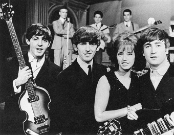
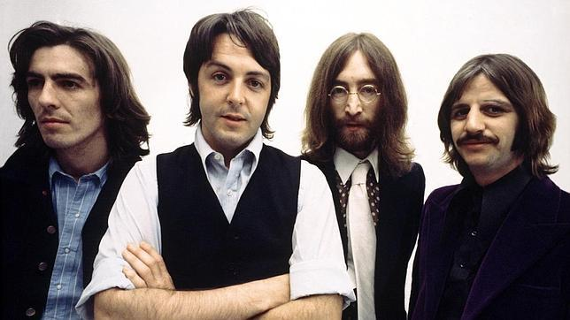

{kind=link}
A partir de 1962, año en que quedó configurado de forma estable, y hasta su separación oficial en 1970, los integrantes de The Beatles fueron John Lennon (Liverpool, 1940-Nueva York, 1980), Paul McCartney (Liverpool, 1942), George Harrison (Liverpool, 1943-Los Ángeles, 2001) y Ringo Starr (Liverpool, 1940). No obstante, es difícil dar una fecha exacta de cuándo se formaron The Beatles. En la segunda mitad de la década de 1950, John Lennon y su amigo Peter Shotton (que lo abandonaría poco después) formaron un grupo de música al que llamaron The Quarrymen, al cual en 1957 se añadió Paul McCartney, seguido poco más tarde por George Harrison. The Quarrymen empezó a tocar en diversos locales de Liverpool, momento en el que se les unió el bajista Stuart Sutcliffe. Ya por entonces resultaba evidente la necesidad de incorporar a un batería. El nombre del grupo iría sufriendo nuevas variaciones, desde Johnny and the Moondogs hasta The Silver Beatles y The Beatles (1960), que a la postre resultaría el definitivo; tal denominación surgió de la moda de poner nombres de animales a los grupos musicales (beetle significa «escarabajo») y del juego de palabras con el estilo que entonces practicaban (la música beat, «golpe»). Finalmente incorporaron a un batería, Peter Best, y consiguieron un contrato para tocar en Hamburgo, en un local de dudosa fama llamado Kaiserkeller. Su primera aventura alemana terminó prematuramente con la expulsión de George Harrison del país debido a su minoría de edad; la misma suerte corrieron luego Paul McCartney y Peter Best, aunque no por minoría de edad, sino por gamberrismo.
A los dieciséis años de edad, el cantante y guitarrista John Lennon, influido fuertemente por la música de Elvis Presley, creó el grupo de estilo skiffle The Quarrymen junto con algunos compañeros del colegio, en marzo de 1957.13 Poco tiempo después, en julio del mismo año, Paul McCartney, que por entonces tenía quince años, conoció a Lennon en una fiesta y se unió como guitarrista.14 Este último invitó a su amigo George Harrison en febrero del año siguiente, el cual, con catorce años, se unió como el guitarrista líder de la formación.1516 En 1960, los compañeros de colegio de Lennon abandonaron la agrupación para ingresar en la Escuela de Arte de Liverpool, haciendo que Lennon y McCartney se encargaran de tocar la guitarra rítmica, aunque les hacía falta alguien que tocase la batería.17 En enero de 1960, un amigo de Lennon, Stuart Sutcliffe, se unió como bajista y sugirió cambiar el nombre de la banda a «The Beetles» (escarabajos) como homenaje a Buddy Holly y The Crickets («Los grillos»). En los primeros meses del año el grupo se convirtió en «The Beatals».1819 Después de probar otros nombres como «Johnny and the Moondogs», «Long John and The Beetles» y «The Silver Beatles», en agosto se decantaron finalmente por «The Beatles».20 La falta de un baterista permanente se planteó en un problema para ellos cuando el gerente no oficial del grupo, Allan Williams, les organizó una reserva en la ciudad alemana de Hamburgo como banda musical residente.21 A finales de agosto hicieron una audición y contrataron al baterísta Pete Best,22 y el quinteto se fue cuatro días más tarde a Hamburgo después de que Bruno Koschmider, dueño de varios clubes en aquella ciudad, les contratara para que tuvieran estancia allí durante 48 noches. «Hamburgo, en aquellos días, no tenía clubes de rock 'n' roll. Había clubes de striptease», cuenta el biógrafo Philip Norman.
La segunda película de The Beatles, Help!, de nuevo dirigida por Lester, fue estrenada en julio de 1965. Descrita principalmente como «una parodia de las películas de James Bond»,108 el filme fue recibido tibiamente por la crítica y por ellos mismos. McCartney comentó: «Help! era estupenda, pero no fue nuestra película, éramos como una especie de estrellas invitadas. Fue divertido, pero básicamente, como idea para una película, estuvo un poco errada».108 Su banda sonora, el quinto álbum de estudio de la agrupación, contenía material original con solo dos canciones versionadas. Lennon era el cantante y compositor dominante en ella, incluyendo los dos sencillos extraídos del álbum: «Help!» y «Ticket to Ride».109 En Help! se les vio con una mayor utilización de doblajes vocales y la incorporación de instrumentos clásicos en sus arreglos, especialmente el cuarteto de cuerdas de la balada «Yesterday».110 Compuesta por McCartney, «Yesterday» posee el récord de ser la canción más versionada de la historia de la música.111 La pista de cierre del LP, «Dizzy Miss Lizzy», se convirtió en el último tema que versionaron e incluyeron en un álbum. Con la excepción del álbum Let It Be, que contenía la canción popular tradicional de Liverpool «Maggie Mae», todos sus discos posteriores incluyeron sólo material original
